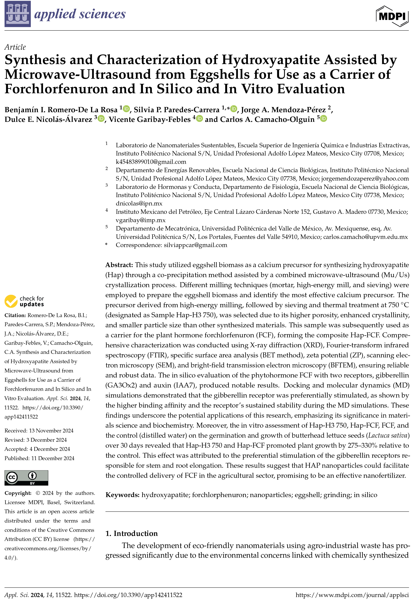
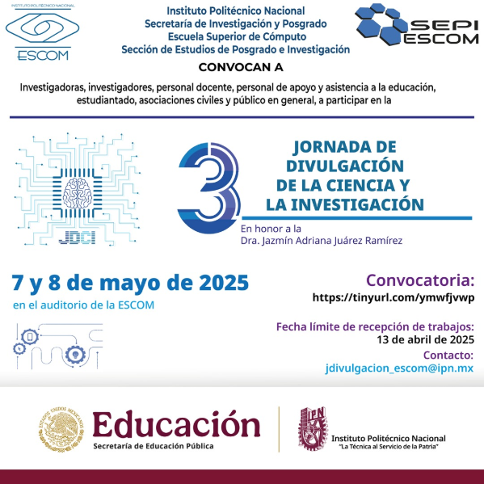

🧪 Líneas de investigación
- Toxicidad de nanopartículas en sistemas biológicos.
- Evaluación micro y ultraestructural de tejidos animales y vegetales expuestos a nanomateriales.
- Análisis de imagen aplicado a sistemas biológicos.
- Evaluación de interacciones químicas entre complejos ligando-proteína mediante herramientas bioinformáticas (diseño y reposicionamiento de fármacos).
- Evaluación de metabolitos secundarios de plantas en modelo murino en los niveles de glucemia.
Alumnos graduados
Princesa Kenny
Tesis: Evaluación de la toxicidad de nanopartículas en zebrafish
Año: 2023
Tesis: Evaluación de la toxicidad de nanopartículas en zebrafish
Año: 2023
Princesa Zelda
Tesis: Análisis de imagen en tejidos vegetales expuestos a nanomateriales
Año: 2024
Tesis: Análisis de imagen en tejidos vegetales expuestos a nanomateriales
Año: 2024
📚 Artículos

Nanoparticle Toxicity in Biological Systems
doi:10.1000/xyz123
doi:10.1000/xyz123
Bioinformatic Analysis of Ligand-Protein Complexes
doi:10.1000/abc456
doi:10.1000/abc456
🏆 Congresos

Congreso Internacional de Nanotecnología 2024
Ponencia: "Evaluación de la toxicidad de nanopartículas en sistemas biológicos"
Lugar: Ciudad de México
Fecha: 15-18 de mayo, 2024
Ponencia: "Evaluación de la toxicidad de nanopartículas en sistemas biológicos"
Lugar: Ciudad de México
Fecha: 15-18 de mayo, 2024